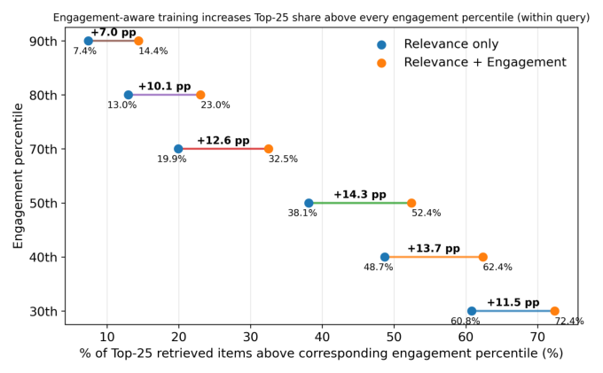
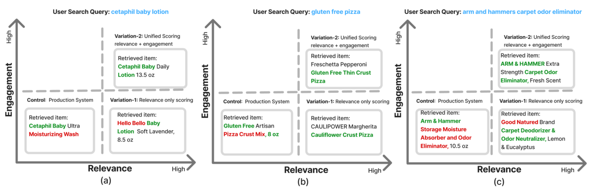

Unified Supervision for Walmart's Sponsored Search Retrieval via Joint Semantic Relevance and Behavioral Engagement Modeling (沃尔玛赞助搜索检索的统一监督：语义相关性与行为互动的联合建模)
- 会议/期刊: SIGIR 2026 (Industry Track)
- 推荐链路定位: 召回 (Retrieval) — 大规模电商赞助搜索第一阶段双编码器检索
- 研究方向: CTR预估与特征交叉 / 协同过滤与双塔召回
- 论文原文: https://arxiv.org/abs/2604.07930v5
- 开源代码: 暂未开源（原文与预提取均未发现开源代码链接）
TL;DR (核心速览)
针对沃尔玛赞助搜索中"互动信号既噪声大又结构性稀疏（受广告位拍卖、竞价、预算限制）"的痛点，本文提出统一监督框架：以交叉编码器教师级联产出的 5 级语义相关性为主监督，叠加多渠道检索先验（排名+渠道一致性）与去偏互动信号（仅作用于相关物品内做偏好精修），构建连续 QIP 监督目标微调 MiniLM 双编码器。在 30,303 条查询的 FAISS 全库 Top-25 检索评估中，P@25 相对生产系统 +10.5%、NDCG@25 +5.7%、平均相关性 +7.8%，线上 A/B 广告曝光 +0.60%（p=0.03）、加购率 +0.99%（p=0.009）。
Background & Motivation (背景与动机)
- 领域背景与主流范式: 现代电商搜索依赖低延迟双编码器（bi-encoder）做第一阶段召回，工业界普遍直接用点击/下单等互动日志做大规模监督（Que2Engage、Taobao EBR、Etsy Unified Embedding 等），因为互动信号零标注成本、持续可得。
- 现有方法局限 (Limitations of Prior Work):
- 互动 ≠ 相关性：物品可能因流行度、促销、吸睛主图、标题或低价获得互动，但语义相关性弱，导致检索器被系统性噪声带偏。
- 互动信号结构性稀疏：在赞助搜索场景，广告是否曝光取决于广告主是否在投、广告位拍卖结果、竞价竞争力与预算，即使高度相关的 query–ad 对也可能因曝光不足而无稳定互动；且搜索页广告位数量少于自然结果位，进一步压缩互动覆盖。
- 既有"相关性+互动"方案中相关性仅作次级过滤（如用相关性阈值过滤互动正样本），训练对仍由互动定义，学习目标依旧被互动驱动。
- 核心挑战 (Key Challenge): 简单地把相关性分数拼进特征或加深网络无法解决——因为问题在于监督信号的定义方式：互动既不能作为正样本定义者（噪声+稀疏），也不能完全丢弃（它承载了促销、物流、卖家评分等下游排序真正关心的偏好信息）。
- 核心洞察与切入点 (Key Insight): 作者提出一条简洁原则——"用相关性定义什么有资格被召回，用互动在相关候选内部精修排序"。同时把生产系统多渠道的排名位置转化为先验分数，既强化高置信正例，又把"高排名但不相关"的候选识别为难负例，直接针对生产系统的失败模式做难负例挖掘。
Problem Formulation & Method (问题定义与方法架构)
1. 符号定义与输入表征 (Notations & Input Representations)
- 查询–物品对记为 QIP \((q, i)\)；查询集 \(\mathcal{Q}\)，物品（广告）全集 \(\mathcal{I}\)，候选集 \(\mathcal{C}(q)\)。
- 检索通道集合 \(\mathcal{S}\)，\(|\mathcal{S}|=3\)（本文生产环境三路召回）。
- 相关性等级 \(Rel(q,i)\in\{0,1,2,3,4\}\)（0=Embarrassing, 1=Bad, 2=Okay, 3=Good, 4=Excellent）。
- 互动计数：订单 \(O(q,i)\)、加购 \(A(q,i)\)、点击 \(C(q,i)\)、浏览 \(V(q,i)\)。
- 模型：MiniLM 双编码器，查询与物品独立编码为向量，输出余弦相似度打分；原文未报告具体 embedding 维度 \(d\) 与最大序列截断长度 \(L\)（原文未报告）。
2. 整体流水线 (Overall Architecture)
数据流：三路生产召回通道产出候选与排名 → 交叉编码器教师级联（Gemma-1B → Gemma-2B → LLaMA-3 8B）产出 5 级相关性标签 → 排名先验与渠道一致性分数 → 去偏互动分数 → 融合为统一 QIP 监督目标 → 以 Cosine Similarity Loss + cachedMNR 对比损失微调 MiniLM 双编码器 → FAISS 全库建索引在线 Top-25 检索。

flowchart TD
A["输入层: 查询 q / 广告物品 i"] --> B["三路生产召回通道: 排名 r_s(q,i)"]
B --> C["多渠道检索先验 π(q,i) 与一致性 C(q,i)"]
A --> D["交叉编码器教师级联: Gemma-1B→Gemma-2B→LLaMA-3 8B + 人工标注"]
D --> E["5 级相关性 Rel(q,i) ∈ {0..4}"]
A --> F["互动日志: 订单/加购/点击/浏览 → 去偏归一化 Ê(q,i)"]
C --> G["统一监督目标构建"]
E --> G
F --> G
G --> H["正例: y_rel-rank-eng (式7) / 负例: y_irrel-rank-lex 难度分 (式8)"]
H --> I["MiniLM 双编码器微调: Cosine Loss + cachedMNR"]
I --> J["FAISS 全库索引 → Top-25 检索输出"]3. 核心模块设计与数学原理 (Key Designs & Formulations)
(1) 分级相关性标签与归一化（主监督信号）
每个 QIP 由人工标注 + 教师级联（按计算代价从低到高依次 Gemma-1B、Gemma-2B、LLaMA-3 8B）产出 5 级序数评分。级联采用早退机制：某阶段置信度超过阶段阈值即接受；未早退则跑完全部阶段取多数票，平票用末阶段预测打破。归一化到 \([0,1]\)：
物理直觉：以"Okay=2"为零点，使 Good/Excellent 为正、Bad/Embarrassing 为负，天然适配余弦相似度损失的目标区间。
(2) 多渠道检索先验与渠道一致性（难负例挖掘的关键）
对每个通道 \(s\)，记录物品排名 \(r_s(q,i)\)，用通道特定最大排名 \(R_s\) 做对数压缩归一化：
跨通道聚合取最大：\(\pi(q,i) = \max_{s: i \in \mathcal{R}_s(q)} \pi_s(q,i)\)。渠道一致性 \(C(q,i) = c(q,i)/|\mathcal{S}|\)，其中 \(c(q,i)\) 为召回该物品的通道数。
物理直觉：对数压缩使排名从 1 到 10 的分数落差远大于从 100 到 1000，符合"头部排名信息量更大"的经验；取 max 而非平均，避免多通道弱召回稀释强通道的高置信信号。对负例而言，高 \(\pi\) 即"生产系统排得高但不相关"的难负例。
(3) 去偏互动信号（仅作相关物品内偏好精修）
加权对数压缩聚合四类行为：
其中 \((\lambda_1,\lambda_2,\lambda_3,\lambda_4)=(1.5, 0.3, 0.1, 0.01)\)（交叉验证调优），体现订单 ≫ 加购 ≫ 点击 ≫ 浏览的漏斗价值递减。随后做查询内 max 归一化（消除查询间热度量纲差异）并施加中心在 0.5 的 sigmoid 平滑（\(k=8\)）：
(4) 统一 QIP 打分：正负例非对称设计
正例（\(Rel \in \{3,4\}\)）先融合相关性、排名先验与渠道一致性：
\((\alpha,\beta,\gamma)=(0.6, 0.3, 0.1)\)，再叠加互动增强并裁剪：
\((\mu_{rel}, \lambda_{eng})=(0.85, 0.15)\)。互动权重仅 0.15，从数值上保证"相关性主导、互动微调"的设计承诺。
负例（\(Rel \le 2\)）定义难度分：
即"生产系统排得高"（排名先验）或"词面重叠高"（token 相似度）的负例更难，用于课程式加权采样。原文未报告 \(\kappa_1,\kappa_2\) 的具体取值（原文未报告）。
4. 训练目标、负采样与推理复杂度 (Optimization, Negative Sampling & Complexity)
- 损失函数: 采用 Cosine Similarity Loss（以式 7 的统一分数为正例目标、以式 1 归一化相关性为负例目标）+ Cached Multiple Negatives Ranking (cachedMNR) Loss 做对比学习。原文未给出损失函数的显式公式与温度系数 \(\tau\) 取值（原文未报告）。
- 训练负采样策略: 基于式 8 的负例难度分做课程式加权采样（curriculum-based weighting sampling），即优先采样高排名先验/高词面重叠的难负例；同时 cachedMNR 提供批内负例（in-batch negatives），通过梯度缓存支持大 batch。
- 时间与空间复杂度: 双编码器支持查询/物品独立编码 + FAISS ANN 检索，在线复杂度与标准 DPR 类双塔一致（原文未报告具体 ms/request 延迟与峰值显存，原文未报告）。教师级联（Gemma-1B/2B + LLaMA-3 8B）为离线一次性标注开销，早退机制用于控制该成本；原文未报告具体标注耗时。
Experimental Setup & Evaluation Protocol (实验设置与评估协议)
- 数据集统计与预处理: 本文使用沃尔玛内部电商赞助搜索数据，未公开用户数/物品数/交互数等统计量（原文未报告）。可获取的规模信息为：离线评测集 30,303 条查询，覆盖 (i) 高流量段、(ii) 高营收段、(iii) 长尾查询、(iv) 历史表现不佳查询四类流量区间；物品索引基于全量物品库存用 FAISS 构建。
| 数据集 (Dataset) | 用户数 (#Users) | 物品数 (#Items) | 交互数 (#Interactions) | 稀疏度/密度 (Sparsity) | 模态/辅助特征说明 |
|---|---|---|---|---|---|
| Walmart 内部赞助搜索（离线评测集） | 原文未报告 | 全量库存（数量未报告） | 原文未报告 | 原文未报告 | 查询文本、广告物品文本；三路生产召回排名；订单/加购/点击/浏览互动计数；5 级人工+模型相关性标注 |
- 数据划分方式 (Splitting Strategy): 原文未明确说明训练/验证/测试的时间或比例划分细节；超参（\(\lambda\)、\(\alpha/\beta/\gamma\)、\(\mu_{rel}/\lambda_{eng}\)）在验证集上交叉验证调优，测试集为独立采样的 30,303 条查询。未采用 LOO 或 8:1:1 等公开基准划分，属工业内部协议，存在不可复现性风险。
- 排名评测协议 (Ranking Protocol): 全库排序（Full-Ranking）——对全量物品库存建 FAISS 索引，为每条查询检索 Top-25 候选（\(K=25\) 对应赞助搜索页固定广告位数）。相关性判定采用混合标注：(i) 可得的人工标注 + (ii) 对无人工标签的 pair 使用内部微调的强 DeBERTa 交叉编码器相关性模型标注。注意：评测标注模型与训练教师级联同源（均为内部相关性模型），存在一定循环论证风险。
- 评价指标与显著性检验: 平均相关性 Avg relevance@25、Precision@25、NDCG@25（5 级 graded 标签计算）；线上 A/B 报告各业务指标的 lift 与 p-value（部分指标达统计显著）。离线实验未报告多随机种子方差或配对显著性检验（原文未报告）。
Key Experimental Results (核心实验结果)
1. 主实验对比 (Main Results)
离线检索评估（\(K=25\)，30,303 条查询，相对生产系统 Control 计算增益）：
| 数据集 | 指标 | Control (生产系统) | Var-1 (仅相关性) | Var-2 (相关性+互动，Ours) | 相对提升 (vs Control) |
|---|---|---|---|---|---|
| Walmart 离线评测集 | Avg relevance@25 | 3.040 | 3.263 (+7.3%) | 3.277 | +7.8% |
| Walmart 离线评测集 | P@25 | 0.794 | 0.873 (+10.0%) | 0.877 | +10.5% |
| Walmart 离线评测集 | NDCG@25 | 0.867 | 0.913 (+5.4%) | 0.916 | +5.7% |
线上 A/B 测试（业务与广告互动指标）：
| 指标 | Lift | p-value | 显著性 |
|---|---|---|---|
| 赞助广告曝光 (Sponsored Ad Impressions) | +0.60% | 0.03 | 显著 |
| 赞助广告浏览 (Sponsored Ad Views) | +0.49% | 0.09 | 边缘 |
| 赞助广告营收 (Sponsored Ad Revenue) | +0.45% | 0.33 | 不显著 |
| 加购率 (Add to Cart Rate) | +0.99% | 0.009 | 显著 |
| GMV | +0.37% | 0.63 | 不显著 |
| 转化率 (Conversion Rate) | +0.13% | 0.64 | 不显著 |
| 每会话总搜索页浏览 | +0.63% | 0.03 | 显著 |
| 每会话总购物车页浏览 | +0.87% | 0.02 | 显著 |
关键观察：Var-2 相对 Var-1 的离线增益很小（P@25 +0.4pp、NDCG@25 +0.3pp、Avg rel +0.014），说明互动信号的作用是"在已相关物品内重排"，而非扩大相关性上界——这与设计意图高度自洽，但也意味着互动模块的独立贡献在离线指标上难以被强有力证明。
2. 消融实验与控制变量分析 (Ablation Study)
原文未提供标准逐模块消融表，但通过 Var-1 / Var-2 的对照可读出两点：
- 相关性+排名先验（Var-1）贡献了绝大部分增益：相对 Control 的 P@25 +10.0%、NDCG@25 +5.4%，说明"以相关性定义正例 + 多渠道先验做难负例挖掘"是主要收益来源。
- 互动信号（Var-2 相对 Var-1）贡献边际但一致：三项离线指标均小幅正向，且图 3 显示高互动物品占比显著提升（50 分位阈值 +14.3pp，90 分位阈值 +7.0pp），证明互动模块确实在"不损害相关性前提下提升互动覆盖"。
- 未做参数量对齐、图度数匹配等控制变量实验（本文非图模型，但亦未报告教师级联不同配置的消融）。

3. 稀疏度/冷启动分桶与超参敏感度 (Sparsity Buckets & Hyperparameters)
- 流量分桶: 评测集显式覆盖高流量、高营收、长尾查询、历史低效查询四类区间，但原文未按分桶分别报告指标，无法判断长尾查询上的增益是否更大（原文未报告）。
- 关键超参数: 互动权重 \((\lambda_1,\lambda_2,\lambda_3,\lambda_4)=(1.5,0.3,0.1,0.01)\)、\((\alpha,\beta,\gamma)=(0.6,0.3,0.1)\)、\((\mu_{rel},\lambda_{eng})=(0.85,0.15)\)、sigmoid 陡度 \(k=8\) 均由交叉验证确定，但未报告敏感度曲线（原文未报告）。
- 定性结果: 图 2 显示统一监督（Var-2）能为每个查询检索到"相关且热门（互动量前 1%）"的商品，而仅相关性监督（Var-1）会检索到"相关但不热门（互动量后 10%）"的商品——直观印证互动模块的偏好精修作用。

- 线上 A/B 测试结果: 已在表 2 列出。显著指标集中在曝光类与站内行为类（曝光 +0.60%、加购率 +0.99%、搜索页/购物车页浏览 +0.63%/+0.87%），而营收、GMV、转化率均不显著（p=0.33/0.63/0.64），说明检索层改进主要作用于漏斗上游，尚未传导至成交端。
Highlights, Limitations & Critiques (亮点、局限与审稿级批判)
- 核心亮点与可迁移性:
- "相关性定义资格、互动精修排序"的非对称监督范式极具普适性，可直接迁移到任何互动稀疏/曝光有偏的召回场景（冷启动推荐、长尾内容检索、广告召回）。
- 多渠道排名先验的对数压缩 + max 聚合是一个轻量、无需额外训练的难负例挖掘算子，任何拥有多路召回的工业系统都可零成本复用。
- 正负例非对称打分设计（正例融合相关性+先验+互动，负例用先验+词面重叠定义难度）在工程上简洁且解释性强。
-
完整的离线 + 线上 A/B 闭环验证，工业落地价值明确。
-
局限性与审稿视角批判 (Critical Limitations):
- 评估协议存在循环论证风险：离线评测的相关性标签部分由内部 DeBERTa 交叉编码器生成，而训练监督来自同源的 Gemma/LLaMA 教师级联——"用相关性模型评相关性模型蒸馏出的检索器"可能系统性高估相关性增益。缺少纯人工标注子集上的独立验证。
- 互动模块的独立贡献证据偏弱：Var-2 相对 Var-1 的离线增益（P@25 +0.4pp、NDCG@25 +0.3pp）未报告显著性检验，且线上营收/GMV/转化率均不显著，难以支撑"互动监督带来实质业务收益"的强结论。
- 可复现性不足：无公开数据集、无开源代码、无数据统计量、无 embedding 维度/序列长度/损失函数公式/温度系数等关键实现细节，工业 track 可接受但学术复现价值受限。
- 超参敏感度与分桶分析缺失：四组超参均称"交叉验证最优"但无敏感度曲线；长尾/头部查询的分桶增益未拆分报告，无法验证方法在稀疏场景的真实鲁棒性。
- 教师级联成本未量化：Gemma-1B/2B + LLaMA-3 8B 三级级联的离线标注开销、早退命中率均未报告，削弱了"工业可落地"论证的完整性。
- A/B 实验细节缺失：未报告实验周期、流量占比、样本量，p-value 的可信度难以独立评估。
Rating (四维评分)
- 方法创新性 (Novelty): ⭐⭐⭐（监督信号融合思路清晰但组件均为已知技术，创新在于"相关性主导+互动精修"的非对称组合范式）
- 评估协议与实验扎实度 (Protocol & Experiments): ⭐⭐⭐（有完整离线+线上闭环，但标注同源循环风险、缺显著性检验与分桶分析）
- 写作与数学规范度 (Clarity & Rigor): ⭐⭐⭐⭐（公式推导清晰、超参取值完整，但缺损失函数显式形式与关键实现细节）
- 工业落地与复现价值 (Industrial & Practical Value): ⭐⭐⭐⭐（线上 A/B 验证充分、算子可迁移性强，但无开源代码与公开数据，复现门槛高）